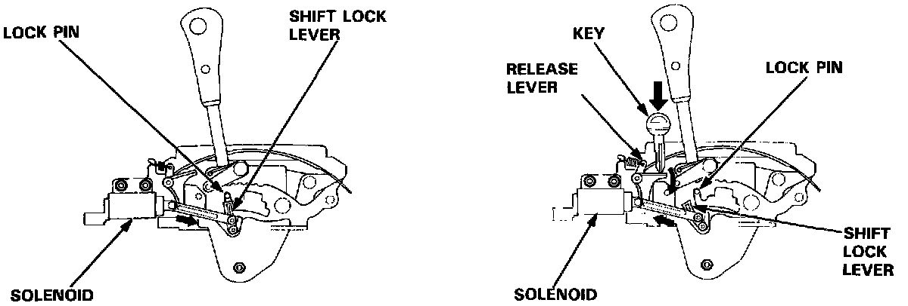

Shift Interlock: Description and Operation
DESCRIPTIONThis car is equipped with the following devices to prevent inadvertently shifting:
- AT selector with shift lock
- Key cylinder with interlocked ignition key

SHIFT LOCK SYSTEM
The shift lock system prevents the shift lever from moving to "R" or "D" from the "P" position unless the brake pedal is depressed.
In case of system malfunction, the shift lever can be released by pushing a key into the release slot near the shift lever.
KEY INTERLOCK SYSTEM
The ignition key cannot be removed from the ignition switch unless the shift lever is in the "P" position.
If the key is inserted when the shift lever is in any position other than "P", a solenoid is activated, making it impossible for the key to be removed until the shift lever is moved to the "P" position.
OPERATION
SHIFT LOCK SYSTEM
Voltage is provided at all times to the key interlock switch. When you push the key in, voltage is provided to the key interlock solenoid, and the interlock control unit. You can then turn the key OFF, and remove it. However, if the AT gear position switch is not in PARK, the interlock control unit will provide ground to the key interlock solenoid, energizing it so the key cannot be removed.
KEY INTERLOCK SYSTEM
With the ignition switch in RUN or START, voltage is provided to the shift lock solenoid. When the AT gear position switch is in PARK, the transmission control module (TCM) provides voltage to the shift lock circuit, provided the brake pedal is pushed and the throttle is not. Ground is provided to the shift lock solenoid through the AT gear position switch. The solenoid then energizes, releasing the AT gear lever.